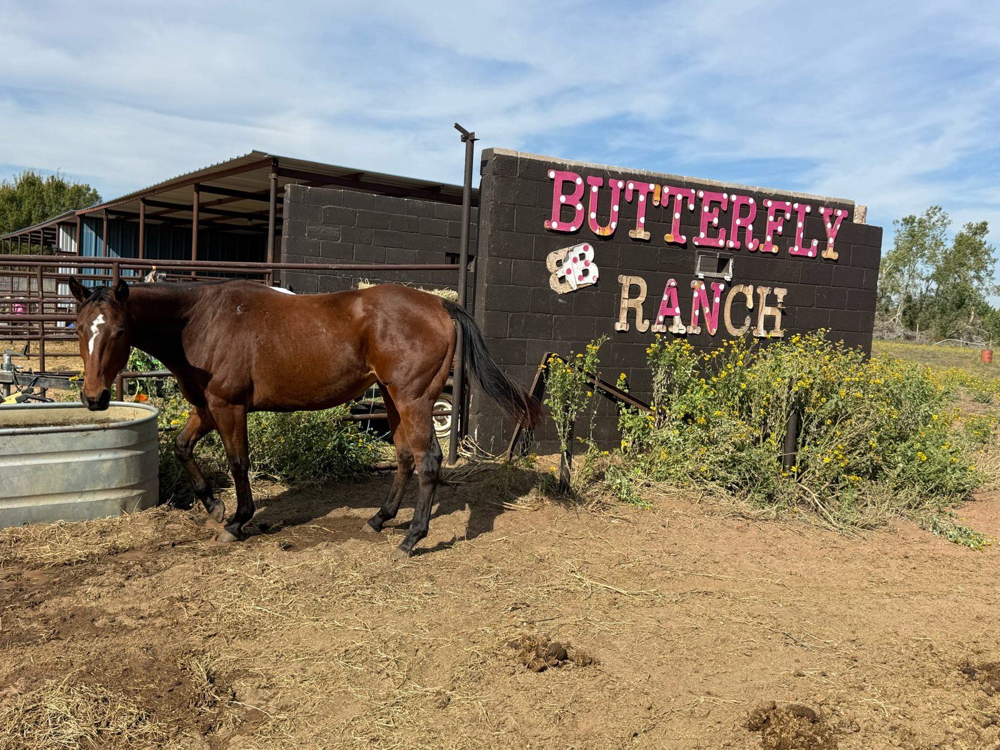
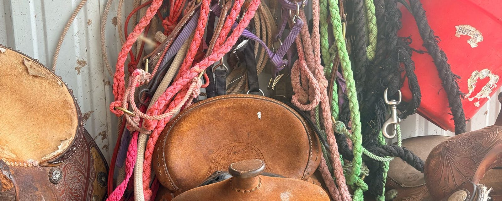

Home › Donate
DonateTransparency you can trust, impact you can see
Be part of every horse's story. Every dollar you give goes to a horse's journey, from rescue to rehabilitation and, in time, a new home. Three steps: pick an amount, choose once or monthly, and pay.

Other ways to give
- Venmo
The ranch's Venmo handle will be here, with a QR code.
- By mail
Checks to Butterfly Rescue Ranch, 7475 By Drive, Norman, OK 73072. A PO Box is being set up.
- Supplies
Feed, hay and tack. See what's needed most →
- Employer match
Many employers double a gift. Ask HR for the form; the ranch will complete its part.
- Sponsor a horse
One horse, by the month, with its updates. How sponsoring works →
Every dollar goes to the horses
At Butterfly Ranch, every dollar spent goes directly to changing the lives of the horses in our care. We take in horses from dangerous situations and give them the safe place, the resources and the love they need to thrive.
Rescued horses need intensive daily care, from proper nutrition and hay to vet checks and rehabilitation supplies. Your gift makes sure these horses never go without what they need. Become part of their recovery today.

Give supplies the ranch uses every day
Have equipment or supplies to give? Physical gifts keep the ranch running. Call first so someone is there: (405) 922-0839.
Needed most
- Feed
- Hay
- Horse supplies: fly spray, wormer, hoof care, brushes
- Children's saddles
- Saddle pads
- Riding helmets
The order of this list is Braxton's to confirm.
Amazon wish list
Order something the horses need and it ships straight to the ranch. Braxton is setting the list up; the link goes here.
What one horse costs us each month
You deserve to see exactly where your money goes. A gift isn't lost in an anonymous fund: you become part of a horse's journey, with updates from arrival to recovery.
| Item | Cost |
|---|---|
| Hay and feed$9 a day, every day | $274 |
| SupplementsEvery month | $50 |
| Farrier$50 every 6 weeks, spread monthly | $36 |
| VetWhen a horse needs it, on top of the set costs | as needed |
| One horse, one month | $360 |
Bringing a new horse in costs more: $1,000 to $2,000 to buy it out of a kill pen. Four rescue horses at the ranch now is about $1,440 a month.
What we promise donors
- A thank-you from us, personally, after every gift.
- An update on the horse you helped, with photos, as it recovers.
- The numbers, in public. This table is updated as costs change.
- Your name stays private unless you tell us you'd like to be thanked by name.
Giving, answered
Is my gift tax-deductible?
Butterfly Rescue Ranch is a registered 501(c)(3) nonprofit, so gifts are tax-deductible to the extent the law allows. You'll get a receipt by email for every gift. The ranch's EIN will be shown here.
Where does the money go?
Hay and feed ($9 a day for each horse), supplements ($50 a month), the farrier ($50 every six weeks) and the vet when a horse needs one. That comes to about $360 a month for one horse before the vet, and every horse's page shows what was spent on it.
Can I give monthly?
Yes. Choose Monthly above. Monthly gifts are what let the ranch plan feed and farrier visits ahead instead of month to month. You can stop at any time from the receipt email.
Can I give to one particular horse?
Yes. Sponsor a horse covers one horse's care by the month, and you'll get its updates. A one-time gift here goes wherever the need is that month.
Can I give supplies instead of money?
Please do. Feed, hay and horse supplies are used every day, and the list of what's needed most is above. Call ahead before dropping anything off.
Does my employer match gifts?
Many do. Ask your HR team for their matching-gift form and send it to the ranch with your receipt; the ranch will complete its part.
Hear how the horses are doing
One email a month, with the horse you helped and what it cost. No more than that.